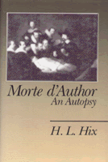

A fundamental error of the "death of the author" debate brought to light
A fundamental error of the "death of the author" debate brought to light


 A fundamental error of the "death of the author" debate brought to light
A fundamental error of the "death of the author" debate brought to light

|  |
Morte d'AuthorAn AutopsyH. L. Hixcloth EAN: 978-0-87722-734-2 (ISBN: 0-87722-734-9) |
"Intelligently framed, delightfully written, analytic in style, the Hix study outlines the question of the death of the author within the context of current debates in philosophy and in literary theory."
—Hugh J. Silverman, SUNY, Stony Brook
In 1968, Roland Barthes’ proclamation of "the death of the author" set in motion more than two decades of debate over the "ownership," origins, and interpretive control of the text. In this book, H. L. Hix argues that those who have accepted Barthes’ claim, as well as those who have rejected it, have made the same fundamental error: the assumption of homogeneity. They have, according to Hix, erroneously assumed that the word "author" refers. and should refer, to a unitary entity or phenomenon. Offering numerous examples to illustrate the wide variety of meanings that common usage demands of the term “author,” he attempts to progress the study of authorship past the assumption of homogeneity. Hix asks, “Just what is an author?” While much attention has been given to that question, criticism has not yet offered a picture of the author that is capable of incorporating all the meanings that usage demands. He examines major modern theories of authorship and demonstrates how, as a result of the assumption of homogeneity, each of the views mistakes one aspect of the author for the whole. Considering the author as both the origin/ cause of the text as well as the function/ effect of the text, Hix constructs a theory of authorship that defines the author as a complex locus of activity in which writer, text, and reader are involved.
H. L. Hix is Assistant Professor of Philosophy in the Liberal Arts Department of the Kansas City Art Institute.
Philosophy and Ethics
Literature and Drama
The Arts and Their Philosophies, edited by Joseph Margolis.
The volumes in The Arts and Their Philosophies, edited by Joseph Margolis, include: overviews of such well-defined sub-disciplines as the philosophy of music, film, and literature; studies of important figures, schools, and movements; monographs on such topics as postmodernism, texts and interpretation, reference in fiction, and the methodology of art history; explorations of the intersection of the arts and other disciplines, such as feminism and interpretation, art and politics; and translations of major works.
© 2015 Temple University. All Rights Reserved. This page: http://www.temple.edu/tempress/titles/757_reg.html.